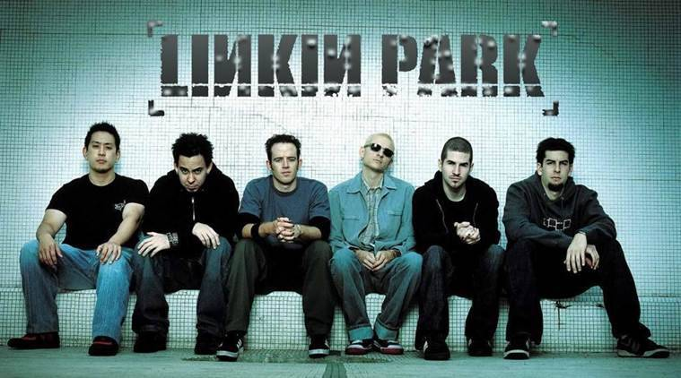

Linkin Park
Xero

Linkin Park is an American rock band from Agoura Hills, California. The band's current lineup comprises vocalist/rhythm guitarist/keyboardist Mike Shinoda, lead guitarist Brad Delson, bassist Dave Farrell, DJ/turntablist Joe Hahn and drummer Rob Bourdon, all of whom are founding members. Vocalists Mark Wakefield and Chester Bennington are former members of the band.
Listed here is their released songs
- 2000 - Papercut
- 2000 - One Step Closer
- 2000 - Crawling
- 2000 - In the End
- 2003 - Breaking the Habit
- 2003 - Don't Stay
- 2003 - Easier to Run
- 2007 - Given up
- 2012 - Burn it Down
- 2012 - Lost in the Echo
- 2012 - Lies Greed Misery
- 2014 - Keys to the Kingdom
- 2012 - One more light
- 2017 - Talking to myself
- 2017 - Heavy
-- Linkin Park